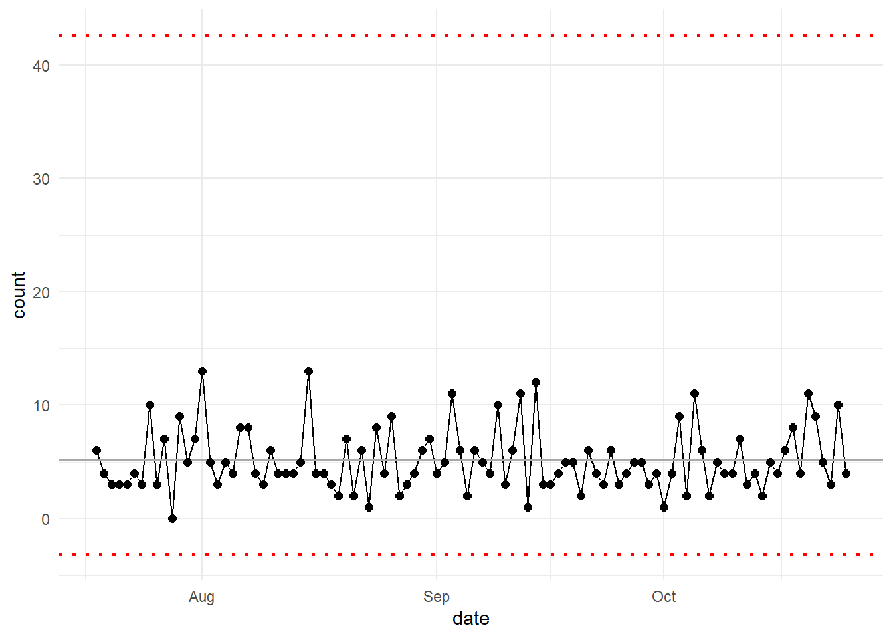
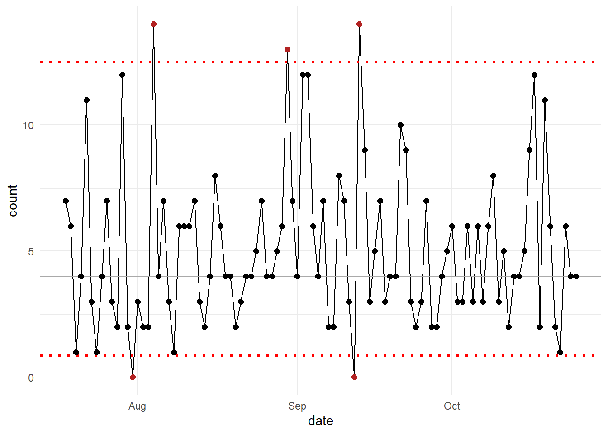

install.packages("healthyR.ai")Introduction
Sometimes you may be working with a time series or some process data and you will want to make a control chart. This is simple to do with the {healthyR.ai} package.
If you do not already have it, then you can follow the simple code below to get the latest version.
Installation
You can install the released version of healthyR.ai from CRAN with:
And the development version from GitHub with:
# install.packages("devtools")
devtools::install_github("spsanderson/healthyR.ai")Now that we have the latest version installed, lets get some data and then use the function.
Library Load
Can’t do anyting without loading the library into our current session.
library(healthyR.ai)
== Welcome to healthyR.ai ===========================================================================
If you find this package useful, please leave a star:
https://github.com/spsanderson/healthyR.ai'
If you encounter a bug or want to request an enhancement please file an issue at:
https://github.com/spsanderson/healthyR.ai/issues
Thank you for using healthyR.aiGenerate Data
Lets generate some fake data below:
data_tbl <- tibble::tibble(
day = sample(
c("Monday", "Tuesday", "Wednesday", "Thursday", "Friday"),
100, TRUE
),
person = sample(c("Tom", "Jane", "Alex"), 100, TRUE),
count = rbinom(100, 20, ifelse(day == "Friday", .5, .2)),
date = Sys.Date() - sample.int(100)
)Lets take a look at the data_tbl, to do so we will use the glimpse() function from dplyr
dplyr::glimpse(data_tbl)Rows: 100
Columns: 4
$ day <chr> "Tuesday", "Monday", "Monday", "Monday", "Wednesday", "Wednesda…
$ person <chr> "Jane", "Jane", "Tom", "Tom", "Tom", "Jane", "Alex", "Alex", "A…
$ count <int> 2, 3, 2, 4, 3, 3, 1, 2, 0, 3, 1, 4, 4, 10, 6, 3, 6, 3, 3, 4, 4,…
$ date <date> 2022-08-02, 2022-09-23, 2022-09-07, 2022-10-14, 2022-08-01, 20…Control Chart
The {healthyR.ai} package comes with a control chart function. The reference for this function can be found here.
Let’s take a look at the full function call and it’s defaults.
hai_control_chart(
.data,
.value_col,
.x_col,
.center_line = mean,
.std_dev = 3,
.plt_title = NULL,
.plt_catpion = NULL,
.plt_font_size = 11,
.print_plot = TRUE
)So we see that there are several arguments to the function, with only three that are required from the user.
Details
Control charts, also known as Shewhart charts (after Walter A. Shewhart) or process-behavior charts, are a statistical process control tool used to determine if a manufacturing or business process is in a state of control. It is more appropriate to say that the control charts are the graphical device for Statistical Process Monitoring (SPM). Traditional control charts are mostly designed to monitor process parameters when underlying form of the process distributions are known. However, more advanced techniques are available in the 21st century where incoming data streaming can-be monitored even without any knowledge of the underlying process distributions. Distribution-free control charts are becoming increasingly popular.
Now let’s see an example or a couple.
Visual
Let’s use the mean as is the default
hai_control_chart(.data = data_tbl, .value_col = count, .x_col = date)
Now let’s use the median and change the standard deviation argument to 1.
hai_control_chart(data_tbl, count, date, median, 1)
For a more advanced set of charts from a dedicated package you may want to check out the following from John MacKintosh:
Voila!